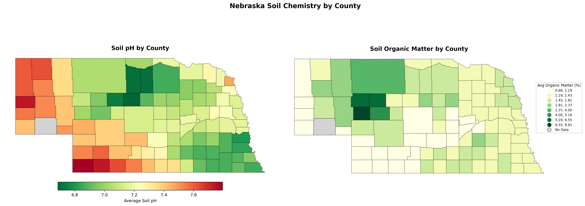
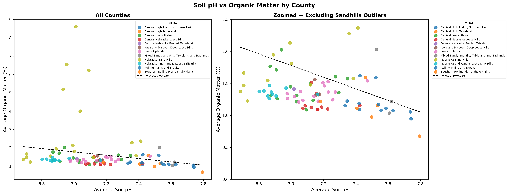
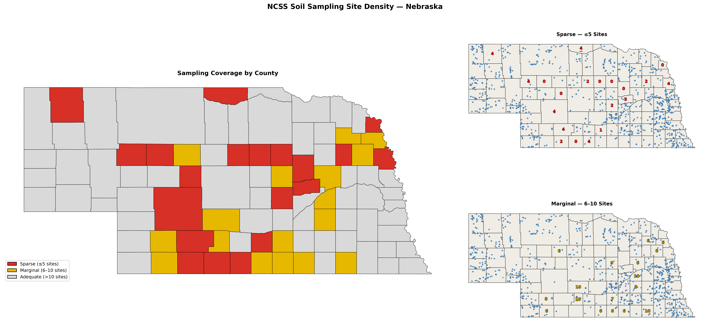

I built this as my first Python-based GIS project for a few reasons. Practically, I wanted to move beyond Esri products and build something reproducible end-to-end in Python — querying live APIs, doing the analysis, and publishing the output to GitHub. But the subject matter was deliberate too.
I have a B.S. in Chemistry and an M.S. in Geography, and soil chemistry sits at the intersection of both. I've also always been interested in how human activity — farming, livestock, land use — has measurable effects on environmental health and, downstream, on human health and economic output. This project isn't about pollution directly, but it establishes a baseline: what does Nebraska soil actually look like, chemically, before you layer anything else on top of it. The next projects in this series build from here.
I moved to Nebraska recently, which made the state a natural starting point. It also turned out to be a genuinely interesting case — Nebraska spans a major environmental transition from the Great Plains to the Rocky Mountain foothills, which drives real variation in soil chemistry worth analyzing.
Soil chemistry data was pulled from the USDA SSURGO database via the Soil Data Access REST API — a SQL-queryable interface that returns horizon-level measurements for every mapped soil component in Nebraska. pH and organic matter values were aggregated to the county level using component-weighted averages, where each soil component's contribution is weighted by its coverage percentage within the map unit.
County boundaries came from the Census TIGER/Line dataset, loaded directly via URL to keep the notebook fully reproducible without local shapefiles. USDA Major Land Resource Area (MLRA) boundaries were fetched from the NRCS ArcGIS Feature Service and clipped to Nebraska — 16 MLRAs in total, spanning Land Resource Regions F, G, H, and M. Each county was assigned its dominant MLRA by area-weighted spatial overlay.
Physical sampling site locations came from the NCSS Lab Data Mart GeoPackage — a separate dataset from SSURGO, representing actual pedon sampling points rather than modeled soil series data. These were used to map sampling density across counties only, not to derive chemistry values.
Statistical analysis included Pearson correlation, OLS linear regression, Moran's I spatial autocorrelation using Queen contiguity weights, one-way ANOVA, and Tukey's HSD post-hoc test for pairwise MLRA comparisons.
The clearest result was the east-west pH gradient — alkaline soils in the western Panhandle, more neutral to mildly acidic conditions in the east. Moran's I for pH came back at 0.78 (p = 0.001), confirming the pattern is geographically coherent and not noise. The mechanism is well understood: higher precipitation in eastern Nebraska leaches carbonates from the soil profile over time, driving pH down. ANOVA confirmed significant pH differences across all 16 MLRAs (F = 15.8, p < 0.001), with 26 significant pairwise differences in the Tukey HSD results.
The organic matter results were more interesting. I expected the Sandhills counties to fall somewhere in the middle of the distribution. Instead, they showed the highest organic matter percentages in the state — Arthur County averaged around 8.6% OM, well above the statewide range for agricultural counties. The Sandhills are native prairie, largely untilled, which explains the accumulation. All six statistically significant Tukey HSD pairs for organic matter involved Sandhills MLRAs. Outside that region, OM differences between land resource areas were largely not significant.



A few things I'd want to interrogate further before drawing stronger conclusions: